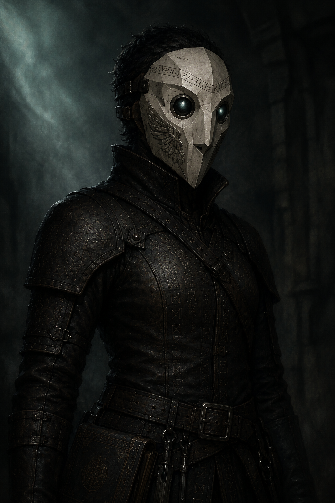

Wren
An alias, not a designation. A Spirit Warden operating entirely off-book. She followed the disturbance trail to the Sunken City and made the crew an offer.
Who She Is
Late thirties. Slight build that reads more capable than it appears — she moves like someone who has learned to move carefully in spaces where wrong steps have consequences. Short-cropped dark hair, practical, no vanity. Eyes that catch light slightly wrong in low conditions — an occupational side effect of years working in ghost-contaminated environments, not supernatural, just accumulated exposure. She cannot always tell what she is seeing and what she is remembering.
A faint chemical smell she cannot fully scrub away: electroplasm residue, mineral and faintly sweet. In plain clothing she is deliberately unplaceable. Her mask — angular, geometric, bone-white with a wing etched into the cheek plate — is distinctive and personal, something she chose rather than was issued. When she visits the crew, the mask is not worn. Setting it aside was a deliberate choice: I am not here officially.
Spirit Warden designations are institutional — a category and a number. She gives the crew a name she chose herself. Unofficial. Not filed anywhere. The choice of a real word rather than a code signals something about how she is approaching this. She wants to be remembered as a person.
She has been the Spirit Wardens' de facto investigator for anomalous disturbances for six years — the cases nobody else wanted, the things that didn't fit the training. She is very good at her job.
She arrived at the Sunken City after Session 7. Her opening: "I'm not here about the uniform." She has known about it for a while and chosen not to report it. She wants a working relationship with people who have been inside whatever is happening in the harbor. In exchange: she manages the Spirit Warden investigation trail away from the crew, shares what the Wardens' sensors are detecting, and holds the uniform case in indefinite suspension.
How She Operates
She does not push when pushing won't work. She asks questions the way someone does who has learned to wait for the answer they actually need rather than the one being offered. She watches faces more than she listens to words. She is patient in a way that suggests she has been wrong before by moving too fast and has not made that mistake twice.
- Spirit Warden detection resources — real-time readings near the harbor and dock district
- Bellweather Crematorium's oldest records — compact-related deaths, unusual spiritual signatures
- Access to decades of incident reports the Wardens logged without understanding
- Cover — she can manage the investigation trail away from the crew, for a while
- Intelligence on Setarra's adjacent network activity
Her vulnerability: She is operating entirely alone. Her organization does not know she is here. If she disappears, nobody is looking for her. She made the calculation and took the meeting anyway.
Harrow's Problem With Her
He will not trust her on principle, and his reasons are not wrong. Spirit Wardens destroy ghosts — efficiently, completely, as institutional policy. For a Whisper who communes with them, watching a Spirit Warden process a ghost is watching someone delete something irreplaceable in the name of civic hygiene.
Wren is not those Spirit Wardens. She is also not free of what they taught her. She will eventually do something that confirms to Harrow she will always fall back on containment when pressure is high enough. Whether that comes before or after she does something genuinely useful is the dramatic question. Do not resolve this tension. Let it remain friction.
GM Notes
- The ghost train activation — investigated the aftermath on the 5th Line
- The sunken temple breach — disturbance readings in the dock district spiked after Session 7
- The crew's general profile — enough to find them, not enough to name everyone
- Something old is activating in the harbor at a scale she has not seen before
- Setarra's name has surfaced twice in adjacent investigation files
- The Spirit Warden outfit. She has been holding this deliberately.
- The harbor compact — she has no framework for what she is detecting
- The Watcher — she knows something vast is present, not what it is
- Scurlock's role — his name is not connected to anything in her files yet
- The three ritual items
- That the Conductor has been engineering her investigation toward this meeting
She would describe how she found the Sunken City as good detective work — a misfiled document, an informant who remembered something, a lead that came together faster than it should have. The trail is subtly wrong. Too clean. Too convenient. The Conductor has been showing her the next door to open for months. She does not know this.
Tick when: she makes a connection the crew hasn't made yet; she finds evidence linking the Ash Compact to the harbor compact; she hears Scurlock's name connected to the crew; she witnesses something at the harbor she cannot explain; she actively diverts a Warden investigation away from the crew.
When full: she has enough to move without the crew — and her next step may not align with theirs.
Her parting shot on leaving the Sunken City: "When you see Victor — tell him we'll be in touch." She knows who Victor is. She connected him specifically to what she has been tracking. She may already know more about Victor's situation than the crew does.